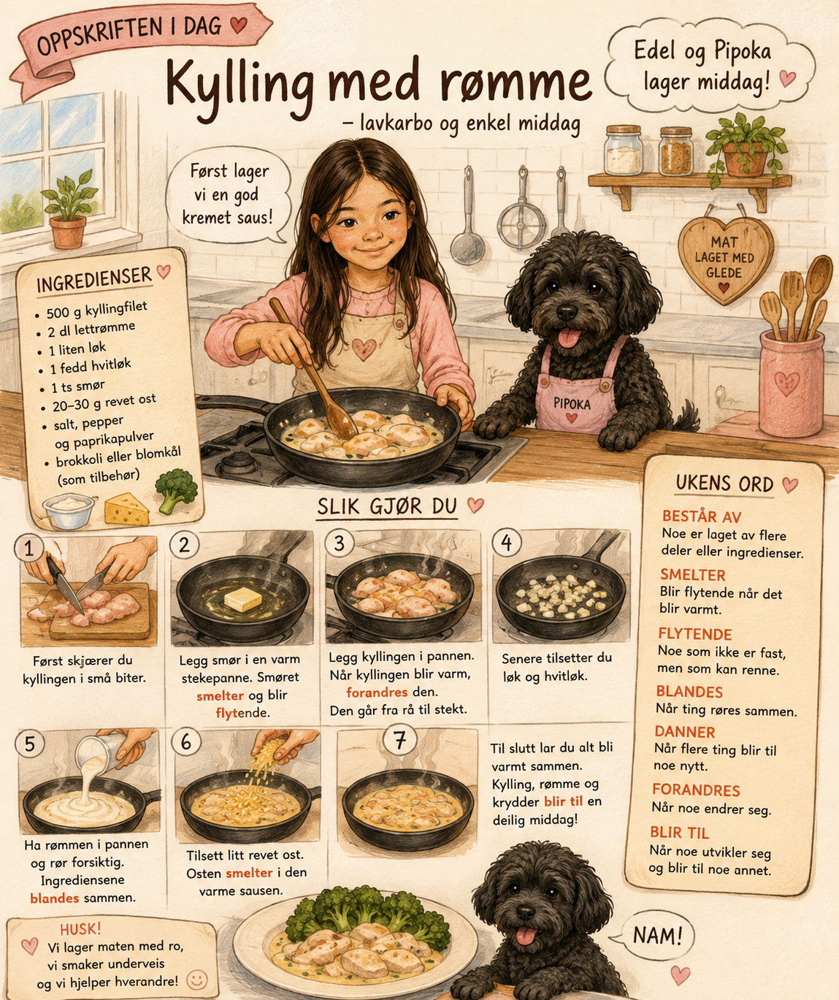

Edels oppskrifter
Kylling med rømme
Lavkarbo og enkel middag

Ingredienser
- 500 gkyllingfilet
- 2 dllettrømme
- 1liten løk
- 1fedd hvitløk
- 1 tssmør
- 20–30 grevet ost
- Salt, pepper og paprikapulver
- Tilbehørbrokkoli eller blomkål
Slik gjør du
- Først skjærer du kyllingen i små biter.
- Legg smør i en varm stekepanne. Smøret smelter og blir flytende.
- Legg kyllingen i pannen. Når kyllingen blir varm, forandres den. Den går fra rå til stekt.
- Senere tilsetter du løk og hvitløk.
- Ha rømmen i pannen og rør forsiktig. Ingrediensene blandes sammen.
- Tilsett litt revet ost. Osten smelter i den varme sausen.
- Til slutt lar du alt bli varmt sammen. Kylling, rømme og krydder blir til en deilig middag!
En liten historie
I dag skal Edel og Pipoka lage kylling med rømme.
Først finner Edel fram alle ingrediensene. Retten består av kylling, rømme, løk, hvitløk, litt smør, ost og krydder.
Edel skjærer kyllingen i små biter.
Etterpå legger hun smør i en varm stekepanne. Smøret smelter og blir flytende.
– Se, Pipoka! Smøret har forandret seg!
Edel legger kyllingen i pannen. Når kyllingen blir varm, forandres den. Den går fra rå til stekt.
Senere tilsetter Edel løk og hvitløk. Så har hun rømmen i pannen.
Hun rører forsiktig. Kyllingen, rømmen og krydderet blandes sammen.
– Hva skjer nå? spør Edel.
Ingrediensene danner en kremet saus.
Til slutt tilsetter hun litt revet ost. Osten smelter i den varme sausen.
Etter noen minutter er middagen ferdig. De forskjellige ingrediensene har blitt til én rett: kylling med rømme!
Pipoka sitter ved siden av Edel og lukter på maten.
– Denne middagen består av mange gode ingredienser, sier Edel.
Pipoka ser på henne. Hun håper selvfølgelig at litt kylling skal falle på gulvet. 🐶
Ukens ord
består aver laget av flere deler
smelterbegynner å kunne renne
flytendenoe som kan renne
blandesforskjellige ting settes sammen
dannerlager eller former noe
forandresblir annerledes
blir tilutvikler seg til noe annet
Snakk om historien
Spørsmål å svare på høyt – uten å se på teksten.
- Hva består denne middagen av?
- Hva skjedde med smøret i den varme pannen?
- Hvordan forandret kyllingen seg?
- Hva dannet ingrediensene til sammen?
- Hva ble alle ingrediensene til på slutten?
Husk!
- Vi lager maten med ro, vi smaker underveis og vi hjelper hverandre!
Passer til
brokkoliblomkålsalatris